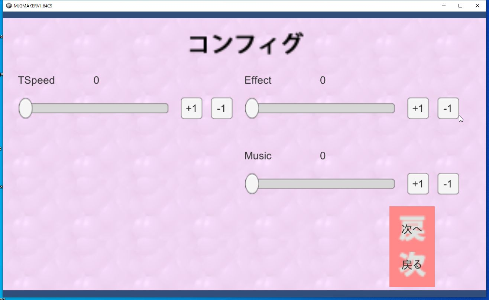
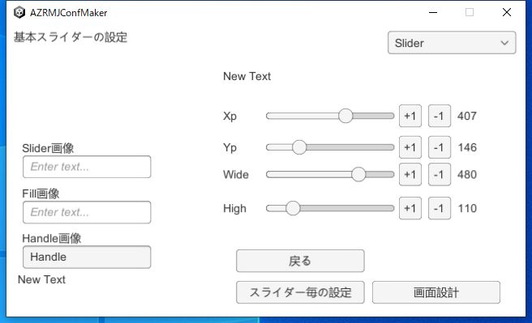
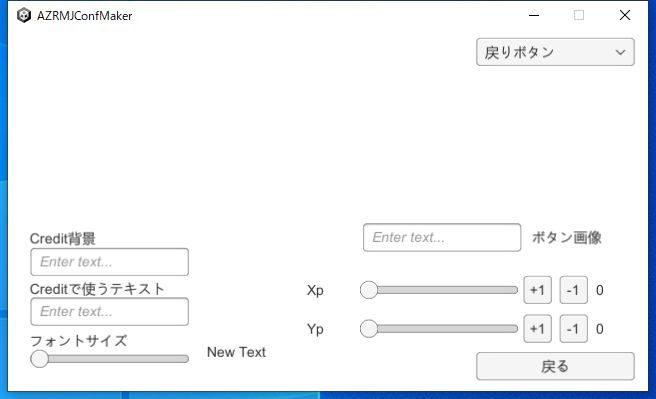
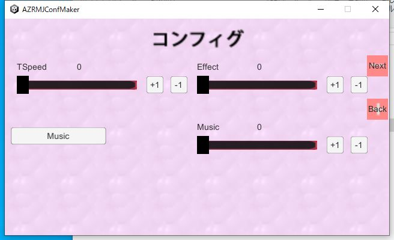

|
前回はバックログ画面の設定を行いましたので、今回はコンフィグ画面です。 コンフィグ画面も前回のバックログ画面と同じように設定します。 |  |
|
まずは、コンフィグメーカーから各種画面の設定→コンフィグの設定を選びます。 左側のフィールドでスライダー（バーの部分)、Fill(埋められる部分)、Handleの画像を決められます 右側のDropDownを弄ることで、Slider、Sliderの数値表示のテキスト、数値の説明のLabel 数値の+1、-1で使うボタンの高さ、幅、位置を決められます。 一通り設定したら戻ります。 |  |
|
次に、メ画面設計で、コンフィグ画面の背景とコンフィグで使うボタンの設計をします また、クレジット画面の背景とクレジットで使うテキスト、フォントサイズも設定します。 一通り設定し終わったら終了です |  |
|
最後にコンフィグAllで一通り配置した物を確認したら終了です。 ファイル書き込みを選んで使うファイルを作成してください。 ファイル作成が終わったら本体側に行きます |  |
|
先ほど作ったファイルを本体側のテキストに放り込みます その後、本体側を起動させて、コンフィグボタンを押して一通り、配置されているかを描くンしてください きちんと、予定どうりの物が出ていればOKです。 |